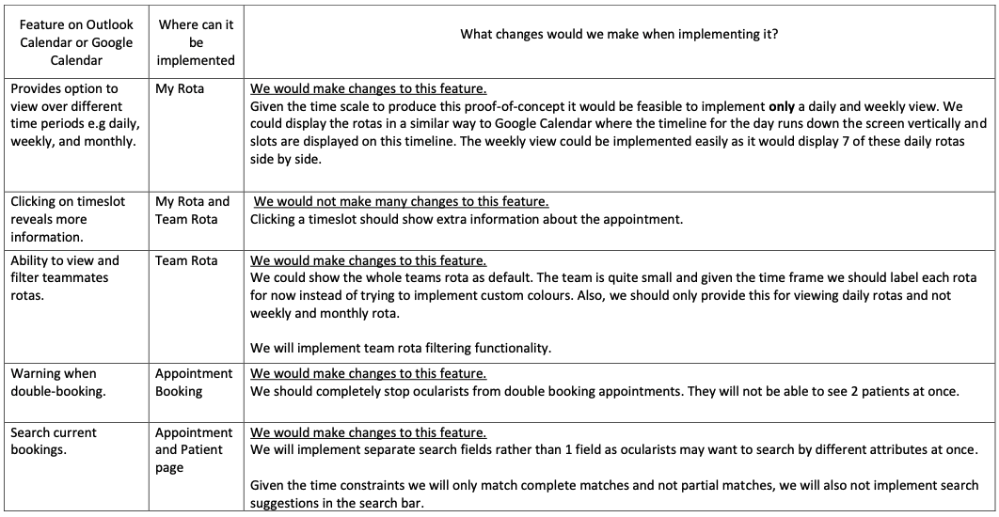
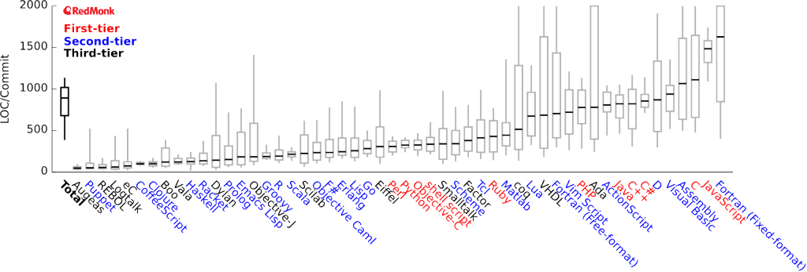

Project Research
General Time Scheduling Webapps
While formulating the requirements for our proof-of-concept we looked at some time
scheduling applications such as Google Calendar and Outlook Calendar. We did this to see
what is feasible
and to give us a greater idea of what our application could look like. Having a greater idea
of what is feasible would help us to avoid agreeing on over-optimistic requirements with our
client.
We found that time scheduling apps broadly solve the same problem that we were trying to
solve for Moorfields. Our problem, in essence, is to provide a way to block time out and
then show this to
the user on the interface.
We looked at features that Outlook Calendar and Google Calendar provide that could be
beneficial to Moorfields in the proof-of-concept that we were developing.
Most features were too complex to completely implement in the given timeframe. In these
cases we didn't
consider implementing it or we aimed to implement a variation of it.
Below are some examples of features in Outlook Calendar and Google Calendar that we took
inspiration from.

Technology Research
Python vs. Java
First of all we decided on the language that we would use to implement this webapp. We
narrowed the choice down to two of the most suitable languages based on implementing
webapps [1], [2]. We all have experience in both languages. After analysis of their
advantages and disadvantages, we decided to choose Python.
The most notable
advantages of
Python over Java are as follows:
☑ All of the team are more comfortable coding in Python, this is an advantage considering
the time constraints for the project.
☑ Python programs are usually 3x-5x shorter than their Java counterparts [3].
☑ Also Java tends towards 'wordiness' while Python tends towards 'expressiveness' [4] as
shown in the diagram [4] below.

The three factors above will make debugging, collaboration and implementation smoother in
Python
compared
to Java.
☑ Moorfields mentioned that in the future, they would like to be able to do statistical
analysis on the
data. Python is widely used among the data science community [5]. After considering this, it
seemed that in the long term Python was a better choice.
Django vs. Flask
After deciding on a language, we started researching web frameworks best suited for
our use case.
We narrowed it down to two of the most popular Python frameworks [6], Django and Flask.
After analysis of their advantages and disadvantages, we decided to choose Django as our web
development framework. Overall, the main reasons for doing so are because Django is more of
a heavy-weight framework, there are more features included in the framework that are
directly relevant to us. Think of Flask as a hammer and Django as a toolbox which happens
to give us everything that we need to develop our proof of concept.
The most notable advantages of Django over Flask are as follows:
☑ Django comes with user authentication [7] and permissions [7], which is something we would
like,
particularly for seperating the ocularists and admin staff at Moorfields.
Flask does not come with this functionality.
☑ Django comes with an admin framework [8], this is important for the longevity of the
project.
Users and groups can easily be edited from the admin page. This makes future admin tasks
such as editing passwords very easy to do and neither us, nor future developers, will need
to spend time developing this functionality.
☑ Django has a built-in Object-Relational Mapper [9] which means two things. Firstly, we
don't have to write
long SQL queries as database tables get directly mapped to Python classes
instead we can 'query' the database with readable python code [10]. Secondly, we have freedom
to
choose which database to use [11], this gives us and future developers extra
flexibility.
☑ For us Django is more secure, it is an open-source project that comes with security
features that protect against XSS, CSRF SQL injection and clickjacking [12] and an
authentication system.
Flask by itself does not
come with this functionality, a downside of this is extra dependencies are needed to
implement a secure system.
Bootstrap vs. React
We had to decide what tool we would use to style the webapp. We
narrowed the choice down to two popular tools used for frontend design,
Bootstrap
and React which are both used to style web pages. After analysis of their
pros and cons, we decided to choose Bootstrap.
The most important
advantages of
Bootstrap over React are as follows:
☑ Bootstrap has more flexibility regarding screen sizes. Bootstrap utilises a grid system
meaning that anything you create with Bootstrap will be compatible across different device
types with different screen sizes [13].
This is an advantage for us because at the start of the project Moorfields expressed a
desire to eventually use the web app on a tablet or smartphone. Using Bootstrap means that
it will be easier to implement this functionality in the future.
☑ Bootstrap works through CSS style sheets [14] in contrast with React which uses
JavaScript [15].
All
of the team is familiar with CSS and HTML and not so confident in JavaScript. This is an
advantage considering
the time constraints for the project. All of the team know HTML and CSS syntax so using
Bootstrap will make collaboration and implementation smoother.
☑ Bootstrap provides components which can be incredibly useful us and for future developers.
Components such as
carousels, accordians, buttons and custom search bars [16] can help give the ocularist power
regarding the information they are accesesing.
Deployment Tools
For deployment we decided to use a Docker container and host it on Azure.
Docker containers and virtual machines have similar uses though we decided to use Docker as
it is more suited to our use case.
Docker allows us to package the application
in an isolated predictable enviroment called a container [17], a virtual machine on the other
hand boots up a whole guest operating system to run the application on [18]. This is more
resource heavy [18]. The more lightweight option of Docker containers is more suitable for us
developing at this stage as we are only developing one application. In further iterations of
this project it may be nessecary to
switch to hosting on a virtual machine. An example would be if multiple systems were to be
integrated such as synchronising our workflow management app with PAS, this would be a
relatively large
project with multiple applications involved so a virtual machine may be more suitable in
this
use case.
For options of cloud services, our main choices were Azure and AWS. They both have
integration with Docker [19]. However, Docker specifically states that
Azure offers 'tight integration between Docker Desktop and Microsoft Azure' [19]. This fact
is
useful
to us and to future developers. Both offer a near identical service to eachother. If real
data were to be used on the application we would have thoroughly looked at the security
implications of using
these services.
This meant that the main consideration for us was the price and it was cheaper to go with
Azure since UCL
provided us with credits. Docker provides great support for AWS and other cloud services [19]
so future developers will
have an easy time switching service if they deem nessecary.
Technical Decisions
| Technology Type | Decision Made |
|---|---|
| Language | Python |
| Web Development Framework | Django |
| Front-End Development Framework | Bootstrap |
| Deployment Tools | Docker and Azure |
References
[1] “FortySeven, “Top 7 languages for web app development,” Top 7 Languages For Web App
Development, 21-Dec-2021. [Online]. Available:
https://fortyseven47.com/blog/lang-web-app-development/. [Accessed: 25-Mar-2022].
[2] “Y. Fedyk, The Best Web Application Development Languages in 2022. [Online]. Available:
https://inveritasoft.com/blog/the-best-web-application-development-languages. [Accessed:
25-Mar-2022].
[3] P. Python, “Comparing python to other languages,” Python.org. [Online]. Available:
https://www.python.org/doc/essays/comparisons/. [Accessed: 25-Mar-2022].
[4] ddberkholz, “Programming languages ranked by expressiveness,” Redmonk.com, 25-Mar-2013.
[Online]. Available:
https://redmonk.com/dberkholz/2013/03/25/programming-languages-ranked-by-expressiveness/.
[Accessed: 25-Mar-2022].
[5] M. Taylor, “Ongoing Kaggle Survey picks the topmost data science trends,” Medium,
11-Feb-2021. [Online]. Available:
https://medium.com/analytics-vidhya/ongoing-kaggle-survey-picks-the-topmost-data-science-trends-7c19ec7606a1.
[Accessed: 25-Mar-2022].
[6] A. Chebanova, “Top 10 python frameworks ranked on github,” HackerNoon, 02-Jun-2021.
[Online]. Available:
https://hackernoon.com/top-10-python-frameworks-ranked-on-github-as3x341n. [Accessed:
25-Mar-2022].
[7] Django, “User Authentication in Django,” Django. [Online]. Available:
https://docs.djangoproject.com/en/4.0/topics/auth/. [Accessed: 25-Mar-2022].
[8] Django, “The Django admin site,” Django. [Online]. Available:
https://docs.djangoproject.com/en/4.0/ref/contrib/admin. [Accessed: 25-Mar-2022].
[9] K. McLaughlin, November 24, “An introduction to the Django ORM,” Opensource.com,
24-Nov-2017. [Online]. Available: https://opensource.com/article/17/11/django-orm.
[Accessed: 25-Mar-2022].
[10] Django, “Making Queries,” Django. [Online]. Available:
https://docs.djangoproject.com/en/4.0/topics/db/queries/. [Accessed: 25-Mar-2022].
[11] Django, “Migrations,” Django. [Online]. Available:
https://docs.djangoproject.com/en/4.0/topics/migrations/. [Accessed: 25-Mar-2022].
[12] Django, “Security in Django,” Django. [Online]. Available:
https://docs.djangoproject.com/en/4.0/topics/security/. [Accessed: 25-Mar-2022].
[13] Bootstrap, “Browsers and devices,” Bootstrap. [Online]. Available:
https://getbootstrap.com/docs/4.2/getting-started/browsers-devices/. [Accessed:
25-Mar-2022].
[14] Bootstrap, “Introduction,” Bootstrap. [Online]. Available:
https://getbootstrap.com/docs/4.3/getting-started/introduction/. [Accessed: 25-Mar-2022].
[15] React, “React – a JavaScript library for building user interfaces,” React – A
JavaScript library for building user interfaces. [Online]. Available: https://reactjs.org/.
[Accessed: 25-Mar-2022].
[16] Bootstrap, “Components,” Https://getbootstrap.com/docs/5.0/components/accordion/.
[Online]. Available: https://getbootstrap.com/docs/5.0/components/. [Accessed: 25-Mar-2022].
[17] Docker, “Docker Overview,” Docker Documentation. [Online]. Available:
https://docs.docker.com/get-started/overview/. [Accessed: 25-Mar-2022].
[18] M. Clancy, “Docker containers vs. VMS: Pros and cons of containers and Virtual
Machines,” Backblaze Blog | Cloud Storage & Cloud Backup, 20-Oct-2021. [Online]. Available:
https://www.backblaze.com/blog/vm-vs-containers/. [Accessed: 25-Mar-2022].
[19] Docker, “Deploy your app,” Docker Documentation. [Online]. Available:
https://docs.docker.com/language/java/deploy/. [Accessed: 25-Mar-2022].